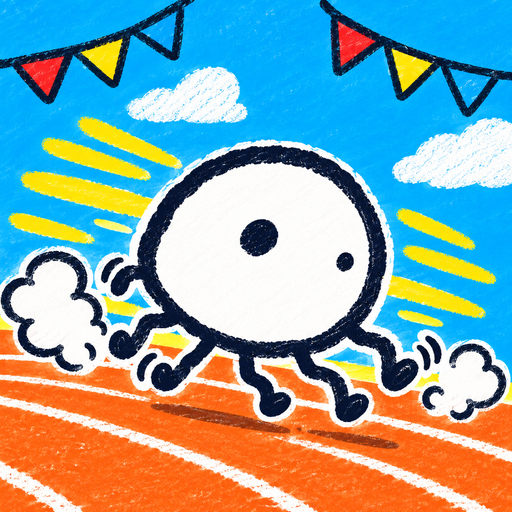

らくがき運動会利用規約・配信について
制定日: 2026年10月18日
この利用規約(以下「本規約」)は、YURU(以下「運営者」)が提供するブラウザゲーム・アプリ「らくがき運動会」(以下「本ゲーム」)を遊ぶときの決まりです。本ゲームを遊んだ時点で、本規約に同意したものとみなします。
1. 配信・動画・スクリーンショットについて
本ゲームの実況・配信・動画投稿・スクリーンショットの掲載は、自由に行っていただけます。運営者への事前の連絡や許可はいりません。
- 個人・法人を問わず、配信や動画投稿をしていただけます。
- YouTube の広告収入、投げ銭(スーパーチャットなど)、メンバーシップ、そのほかの配信サービスの収益化機能を使っていただいてかまいません。
- VTuber の方の配信、切り抜き動画、ブログや SNS への画像の掲載もできます。
- 概要欄などに「らくがき運動会」というゲーム名と、URL(https://yurustudio.github.io/undoukai/)を書いていただけるとうれしいです。書くかどうかは任意です。
- 配信の中で、視聴者の方が描いた絵や「みんなのらくがき」に並ぶ絵が映ることは問題ありません。
次のような使い方はご遠慮ください
- 本ゲームそのもの(プログラム・画像・音楽などのデータ)を、自分の作品として再配布・販売すること。
- 本ゲームの画像や音楽などを取り出して、別の作品の素材として使うこと。
- 本ゲームを運営者の公式のものと誤解させる使い方。
- 法令や公序良俗に反する内容、他の人を傷つける内容と組み合わせて使うこと。
なお、本ゲームで流れる音楽・効果音は、クレジットに書いた作者の方の素材です。配信や動画にそのまま映り込むことは問題ありませんが、音楽だけを取り出して使う場合は、それぞれの素材の利用規約に従ってください。
2. 描いた絵(投稿したらくがき)の扱い
- 本ゲームで描いた絵の著作権は、描いた人に残ります。運営者が著作権を取り上げることはありません。
- 「みんなのらくがき」に出した絵や、ランキングに載った絵は、名前と一緒に、ランキングやレースの対戦相手として、ほかの人の画面に表示されます。
- 運営者は、本ゲームの紹介のため、SNS・動画・ストアの紹介ページなどで、投稿された絵を無償で紹介することがあります。絵を出した時点で、これらの表示と紹介を許可していただいたものとします。紹介をやめてほしいときは、お問い合わせ先までご連絡ください。
次のような絵や名前は描かないでください
- 他人の著作物や、アニメ・ゲームなどのキャラクター、ロゴを描き写したもの。
- 本名・住所・連絡先など、個人を特定できる情報。
- わいせつな絵、暴力的な絵、差別的な絵や言葉、他の人を傷つけたり不快にさせたりするもの。
運営者は、本規約に反すると判断した絵や名前を、予告なく非表示・削除できるものとします。ゲームの中の「通報」から知らせていただいた絵は、一定の数が集まると自動で一覧から外れます。
3. 禁止事項
本ゲームを遊ぶときは、次のことをしないでください。
- 法令や公序良俗に反する行為。
- 本ゲームのサーバーやデータへの不正なアクセス、プログラムやデータの改ざん、解析して不正に使うこと。
- ツールの使用やデータの書きかえなどで、ランキングやタイムを不正に操作すること。
- 自動の操作や大量の通信など、サーバーに過度な負担をかけること。
- 同じ絵を何度も出す、うその通報をくり返すなど、他の人の遊びをじゃますること。
- 他の人や第三者の権利(著作権・肖像権・プライバシーなど)を侵害すること。
- 他の人への嫌がらせ、なりすまし、迷惑となる行為。
- そのほか、運営者が不適切と判断すること。
これらにあたる行為があったときは、運営者は、その人の投稿やランキングの記録を削除したり、オンラインの機能を使えないようにしたりできるものとします。
4. 免責事項
- 運営者は、予告なく本ゲームの内容を変更したり、提供を一時中断・終了したりすることがあります。
- 描いた絵、レースの記録、アルバムなどのデータは、お使いの端末やサーバーに保存されますが、消えないことは保証できません。ブラウザのデータを消したときや、端末を変えたときは、引き継がれないことがあります。
- 通信の混雑などで、「みんなのらくがき」やランキングが一時的に見られないことがあります。
- 本ゲームを遊んだことで生じた損害について、運営者は責任を負いかねます。ただし、運営者に故意または重大な過失がある場合は、この限りではありません。
- 利用者どうしのトラブルは、当事者の間で解決してください。
5. 広告と完全版について
ブラウザ版の本ゲームでは、運営を続けるため、タイトル画面や結果の画面などに広告(忍者AdMax、Google AdSense)を表示します。広告の配信元は、Cookie などを使うことがあります。
完全版(アプリ内課金)
- Android・iPhone のアプリ版では、完全版(買い切りのアプリ内課金)を購入できます。値段はストアの購入画面に出るとおりです。ブラウザ版では購入できません。
- 完全版でできるのは、縦動画の保存、特別なペンと線の太さ、自分の図鑑(300匹まで)、キラキラの見た目です。走る速さ・強さ・ランキングの計算は変わりません。
- 購入・支払い・返金は Google Play または App Store の決まりに従います。返金の申し込みは各ストアで行ってください。
- アプリを入れ直したときや機種を変えたときは、同じストアのアカウントで「購入を復元」を押すと完全版にもどせます。
- 本ゲームの提供を終えるときなど、やむを得ない理由で完全版の機能を使えなくなることがあります。
6. プライバシー
本ゲームで送る情報(匿名の利用者 ID、出した絵と名前、ランキングのタイムなど)と、その扱いは、プライバシーポリシーに書いています。
7. 規約の変更
運営者は、必要に応じて本規約を変更することがあります。変更後の本規約は、このページに載せた時点から効力を持ちます。
8. 準拠法・管轄
本規約は日本法に従って解釈します。本ゲームに関して争いが生じたときは、運営者の所在地を管轄する地方裁判所を第一審の専属的合意管轄裁判所とします。
9. お問い合わせ
本ゲームや本規約についてのお問い合わせ、絵の削除のご依頼は、次の窓口までお願いします。
- メール: kame6493@gmail.com
- X: @apkderete
運営者: YURU
広告